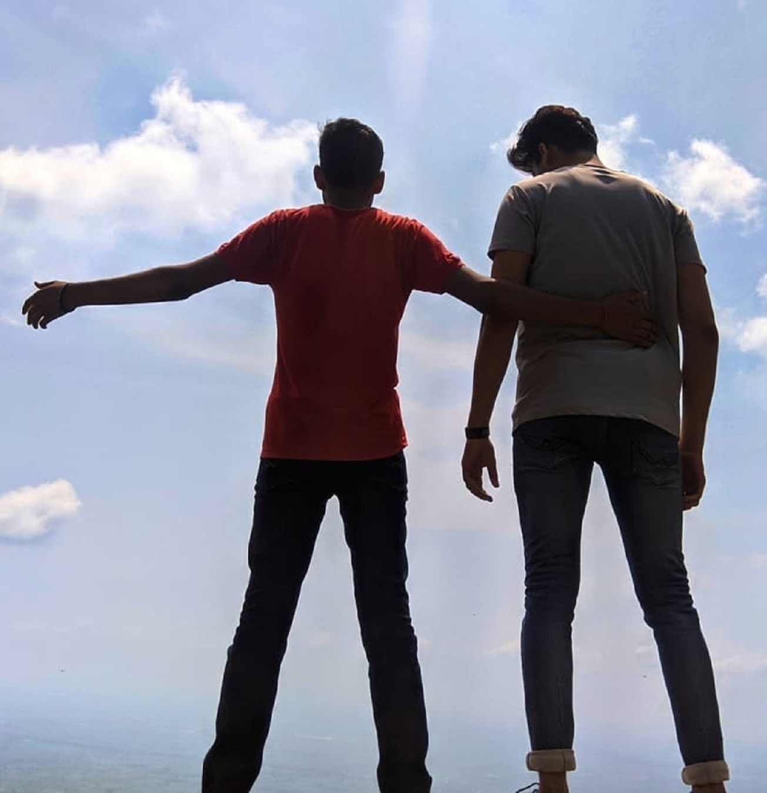

My Blog

Hi Everyone
Welcome to my personal blog
About Me
Hi! I am Sagar Saini and I am 22 years old. I am from India but currently I am living in Tornto for the purpose of study. I have done Graduation in informstion Technology from India and now I am persuing my post-graduation here in the same field. I had dream to come to Canada so I really worked hard It.
Successes and failures are closely associated with one’s achievements and losses. One who achieves anything today has lost a thing yesterday. There is no completely successful man without the mixture of both failures and successes. That is to say, I failed a dozen of times. But, every failure made me stronger ever.
My family, especially my mother, has been the much source of encouragement and motivation for me.
That is why I myself am a truly self inspired, strengthened and dedicated fellow today.
I have learnt a lot from my mistakes and from my failures.
I never regard my failure as a curse rather an opportunity to improve and to improvise.
My life is full of experiments and achievements. I have got success many times and many times I have failed also. This all has truly taught me the importance of rising again and strike again. I continue to update myself to be the better version of myself. Although no one can be described in a few set of sentences. One need to have though command of oneself before going to write something about his life. That’s to say my life has become what is, an essence of all of my achievements and struggles